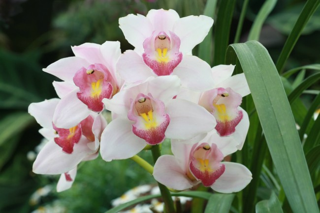
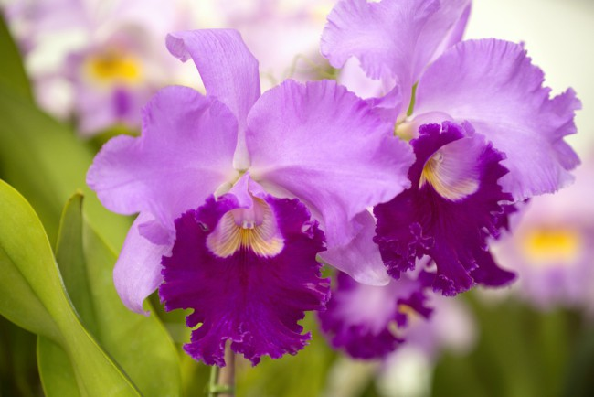
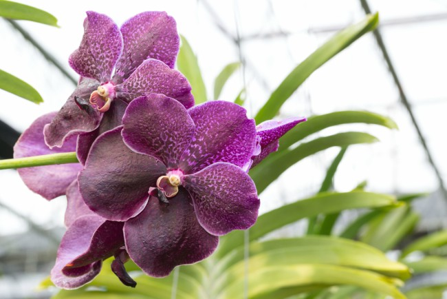
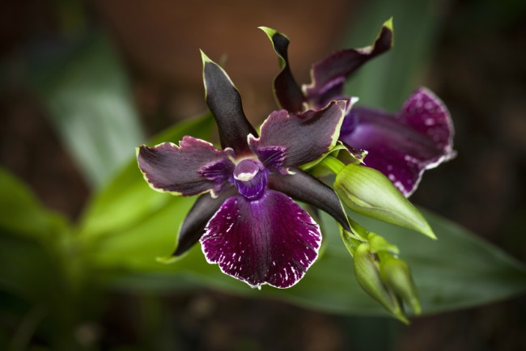

Las Orchidaceae o también con su nombre común orquídeas de la familia monocotiledóneas.Este tipo de plantas son
conocidas por la forma peculiar de sus pétalos y sus colores atrayendo a los polinizadores y siendo
atractivas así el público. Te has preguntado cómo cuidar, cuantas especies
hay y en que ayudan al ecosistema.
Cuidados básicos
* La luz solar debe ser moderada sin mucha luz y sin que pegue directamente en los rayos del sol
* Con una humedad de 55-75 %.
* El uso de fertilizante balanceado de cada mes.
* La temperatura donde se debe poner debe ser tropical entre los 15-25 ºC.
Los tipos de orquideas
phalaenosis
Es la más común, se considera elegante por susu colores y la froma de sus petalos
Cymbidium
combina el colorido de sus flores con el verde de sus numerosas hojas, lo que aporta un ambiente tropical
selvático.

Cattleya
Esta tiene tres pétalos más alargados y dos ligeramente más ovalados, con algún rizo en sus bordes.

Vanda
No crece en suelo, sino que tiene raíces aéreas y desnudas que se desarrollan en rocas o árboles.

Zygopetalum
Suelen tener cinco pétalos alargados en su parte superior y un labelo grande y redondeado en su parte inferior. Es muy diferentes a las demás especies, porque habitualmente ese labelo
no suele destacar más que los pétalos, como sí sucede en este caso.

¿Porque las raíces de mi orquídea están secas?
Si las raíces están de color más grisáceo al verde habitual y más secas, significa que es momento de volver a regar.
¿Quieres saber más?